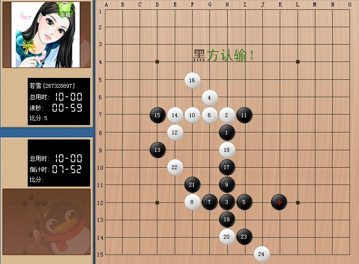

瑞怪局（交作业）
#1 瑞怪局（交作业） 作者：如霜 发表时间：2010-10-25 0:10:13
昨天上完米兰师傅的讲课内容，心情非常的愉快！实在是没有想到，讲课还可以这样讲的。从一个故事开始循序渐进，让我从以前对棋的迷糊中真正的记住了那每一个单纯的点和数字是什么意思。为什么要那么走。多的废话我就不讲了。反正两小时的课很愉快的只感觉一下子就结束了。
愉快是愉快了。可杯具接着就来了。。我刚在棋房里上窜下跳发着各种开心表情时。师傅那里超级快甩出一行字来，要求我们写一篇自己自下棋以来最得意的一盘棋的心得体会。脑袋空白了2秒后，坐在电脑边喝着咖啡，还啃着半拉甘蔗的我哎呀的喊出一声：“我滴妈呀~~~！！俺自出道以来只是被砍的时候多，砍人的时候少。这N多盘棋是下了就丢，丢了就忘。这哪里去找那下得很得意的一盘棋呢？”
我这里弱弱的额~~了声，想试探下师傅那里有没有回旋优惠的余地，没想到啊，换来一声吼：“如霜你写不出来不给在来上课！！！”一瞬间。。。。眼前仿佛倒了一堆子的。。￥%·*—·茶具#·%—*杯具~~~~~~！！！！！
写吧，开始狂翻从前保存下来的一些图片资料，翻来翻去也没翻出什么宝贝来。不过却看到了一张几年前俺滴马甲号下的一盘棋，那盘棋下得算是另外一种得意吧。那是在一个风平浪静的夜晚，我换了件叫若雪滴衣服往三手一座位上刚一坐下，一个MM窜了进来，举手，我们开始砍棋，这家伙估计比我还要菜，云雨花蒲滴开来，我肯定要换拉，哈哈。想不砍她都不行。一路砍一路连嬴了她4盘了。估计MM气坏来。发了一道话上来“不要走！我喊个人来砍死你”，不一会，进来一个9段的男人。胡子拉碴滴瞪着我。那妹妹鼻涕眼泪的指着我说：“就是她”。然后那9段胡子说了声：“妹妹让开，我来”！
我滴心纳~~~~扑通~~~扑通~~~~滴跳，想跑吧。可那胡子已经进来举手了。我迟钝着......迟钝着......很多等下输掉后被他们羞辱的镜头出现在脑海里......可见9段胡子的手一直举着，我硬着头皮点下了“开始”。
胡子执黑，1，2点下后，他飞起一个3甩了好远哦，吓死人的。
=======上图对应的爱五子棋谱代码如下，以便你拆解：========
h8h9h4g10
======================================================
我一看，完了。。没见过这样的开局，没有把握我又不敢交换，那时候又不懂什么软件的，全是傻下。想啊想啊。不知道4该下哪里好。忽然感觉这棋还是很象瑞星滴，一不做二不休，就当瑞星下吧。大不了等下一输我投了就跑。不留机会给他们奚落我。于是我点上了这个4，他紧跟着3旁边下了这个5，我一看。哎呀。胡子有一个二了，我也有一个二，我管你那么多。我死活反正是要比你多几个二才好，反正你那个二就算是连成三我一挡就完事，你又没有继续连的地方了。于是我6下了G9，那个时候印象里瑞白好象是这么下的。哈哈！可当他下了7，我8左边一挡上，他H5的9子一落。我又傻眼了。。
=======上图对应的爱五子棋谱代码如下，以便你拆解：========
h8h9h4g10i4g9g4f4h5
======================================================
我要是10下G7吧他11能下G6反我，我最想10下G8等下能和2在继续连三，可一看，他要11下G7能秒了我，我10下I8他11下J7又反我。急啊。。。。怎么办，怎么绕开呢，时间哗啦哗啦的过。胡子一个劲的刷“快点吧，我等到花儿也谢了.....”。正着急的时候，一看。耶！~~10下F9我离你远点。。你左挡右挡你都没杀没连接，当时那计算力也算不到后面什么情况。只是走一步看一步，于是管他3721直接10下到了F9，他11右边一挡，走完15，我一看。16我要是走E7的话他又可以反我。我干脆还是离你远点于是我下在了F11，结果9段胡子没理我的连三，一顿噼里啪啦的冲四......

我脑袋嗡了一下，以为他杀了，结果他冲完23手后一看，他一个杀没有。还帮我又冲出来一个跳三，停顿，停顿，他在看，我也在看，我先看他有杀没有。我左看右看上看下看，哈哈。黑没有杀。挖哈哈哈哈......我却有两个三......哈哈。在他最后泄气的点下25后。一直看着他的那MM发上来一个发呆的表情，我还没来得及下J4。9段胡子直接投子认输然后飞走得人都不见了。座位上空荡荡地留下我一个人，那一分钟心里的感觉，真的象是打翻了五味瓶一样的。从刚开始连胜的得意，到看到9段进来的恐惧，到开始和他对砍时候的迷惑。被他一顿乱冲吓了一跳的紧张，最后是这么一个结果。哈哈。真畅快~~！！！！于是截了个图保留了下来，只是9段胡子跑得太快了。没有截到他当年的名字，嘿嘿。没想到这图今天还派上点小用场，一想到这作业
#2 Re:瑞怪局（交作业） 作者：如霜 发表时间：2010-10-25 12:15:00
呀~~超过三小时就修改不了，- -！晕，还想改改呢#3 Re:瑞怪局（交作业） 作者：屏蔽 发表时间：2010-10-25 12:46:18
引用：得意的棋和对局结果没啥关系。
俺自出道以来只是被砍的时候多，砍人的时候少。这N多盘棋是下了就丢，丢了就忘。这哪里去找那下得很得意的一盘棋呢？
#4 Re:Re:瑞怪局（交作业） 作者：如霜 发表时间：2010-10-25 19:16:17
引用：恩。是的。谢谢李一。所以我写这个作业的时候就讲了，这算是另一种得意，呵呵！实在是没有料子，你咋还不帮我呢。等下师傅要不给我通过或叫我重写我就又杯具
原文由 屏蔽 发表于 2010-10-25 12:46:18 :引用：得意的棋和对局结果没啥关系。
俺自出道以来只是被砍的时候多，砍人的时候少。这N多盘棋是下了就丢，丢了就忘。这哪里去找那下得很得意的一盘棋呢？

#5 Re:瑞怪局（交作业） 作者：不知取何名 发表时间：2010-10-26 9:28:08
就当时的情况如霜姐这么写自己的心理以及和对手下出这样的棋已经很好了，但就棋的内容个人感觉不算精彩#6 Re:Re:瑞怪局（交作业） 作者：如霜 发表时间：2010-10-26 9:38:33
引用：恩。弟你来篇精彩的，我等着看
原文由 不知取何名 发表于 2010-10-26 9:28:08 :
就当时的情况如霜姐这么写自己的心理以及和对手下出这样的棋已经很好了，但就棋的内容个人感觉不算精彩

#7 Re:瑞怪局（交作业） 作者：朗星 发表时间：2010-10-27 19:28:57
才不信。。。#8 Re:Re:瑞怪局（交作业） 作者：如霜 发表时间：2010-10-27 19:31:07
引用：微微你不信什么？
原文由 朗星 发表于 2010-10-27 19:28:57 :
才不信。。。
#9 Re:瑞怪局（交作业） 作者：朗星 发表时间：2010-10-27 19:32:36
不信师傅会真的对你凶，也不信你是菜鸟。